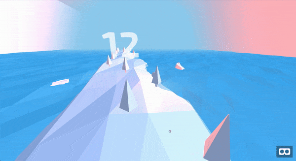

What we've built
We'be built VR game that allows to distract a patient, and engage in plesant activity
Game can be played on any device, with or without VR headsed, levereging WebVR, threeJS and AFrame framework
Dealing with pain and treatment anxiety is challenging, especially for kids.
Research proves that Virtual Reality (VR) experience can reduce pain and anxiety during procedures. It's applied already in certain hospitals, but using traditional VR headsets is out of reach for many still.
That's why we think it's crucial to bring this tool to more people, by building VR game that can be used with any device, right from the browser. Tune in to see what we've built during the weekend at Junction Connected 2020!
We'be built VR game that allows to distract a patient, and engage in plesant activity
Game can be played on any device, with or without VR headsed, levereging WebVR, threeJS and AFrame framework
You can play the game from your browser. Tested on desktop (Chrome), IOS (Safari)

1. iPhone users -> go first to setup page, and grant permission to motion sensor, and make sure you can navigate by moving your phone
* 1.1 I would recommend pressing aA in Safari and selecting "hide toolbar", for more immersive feeling.
2. Android -> go straight to the game
Unfortunately, WebVR might not work smoothly on all Android devices/browsers. If you get glitchy/laggy experience you can try another browser,try on your computer, or watch demo video below!
Big thanks to A-Frame (aframe.io) for great tutorials and to Alvin Wan and his blog post series on building VR game using A-Frame, whose examples and explainatons helped us build the game in one day with no prior experience in game development